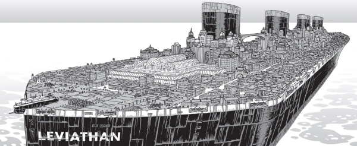

A mega-Titanic seems to be lost on an eternal sea, and passengers are going missing. By all accounts, the ship should have run out of steam - so what is driving the Leviathan onwards?
Edginton's "Wheel of Worlds" multiverse has several narrative links here. The drink Captain McLean's Old Rotgut also shows up in American Gothic, while Leviathan is also the name of Toten's dark god in Ampney Crucis (which also features the Eye of Hastur symbol). Sir William Ashbless is also a character in Stickleback and in both worlds he creates mega-ships as owner of the White Hart-Line.
Art by D'Israeli
| Story Title | Parts | Pages | w indicates a wraparound coverCovers | Year(s) | Issues | Writer | Artist | Colourist | Letterer |
|---|---|---|---|---|---|---|---|---|---|
| Leviathan | 10 | 50 | 1360: D'Israeli 1 | 2003 | 1351-1360 | Ian Edginton | D'Israeli | [greyscale] | Tom Frame |
From Tales of the LeviathanChosen Sun | 1 | 5 | 0 | 2004 | p2005 | Ian Edginton | D'Israeli | [greyscale] | Tom Frame |
From Tales of the LeviathanMcLean's Last Case | 1 | 5 | 0 | 2005 | 1465 | Ian Edginton | D'Israeli | [greyscale] | Tom Frame |
From Tales of the LeviathanBeyond the Blue Horizon | 1 | 5 | 0 | 2005 | 1466 | Ian Edginton | D'Israeli | [greyscale] | Tom Frame |
| year | episodes | pages |
| 1994 | 0 | 0 |
| 1995 | 0 | 0 |
| 1996 | 0 | 0 |
| 1997 | 0 | 0 |
| 1998 | 0 | 0 |
| 1999 | 0 | 0 |
| 2000 | 0 | 0 |
| 2001 | 0 | 0 |
| 2002 | 0 | 0 |
| 2003 | 10 | 50 |
| 2004 | 1 | 5 |
| 2005 | 2 | 10 |
| 2006 | 0 | 0 |
| 2007 | 0 | 0 |
| 2008 | 0 | 0 |
| 2009 | 0 | 0 |
| 2010 | 0 | 0 |
| 2011 | 0 | 0 |
| 2012 | 0 | 0 |
| 2013 | 0 | 0 |
| 2014 | 0 | 0 |